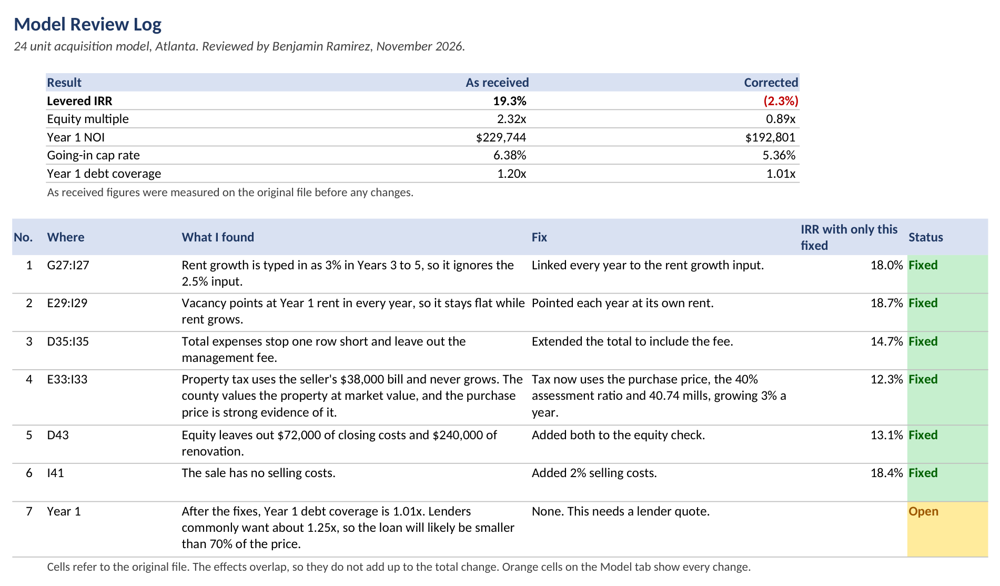
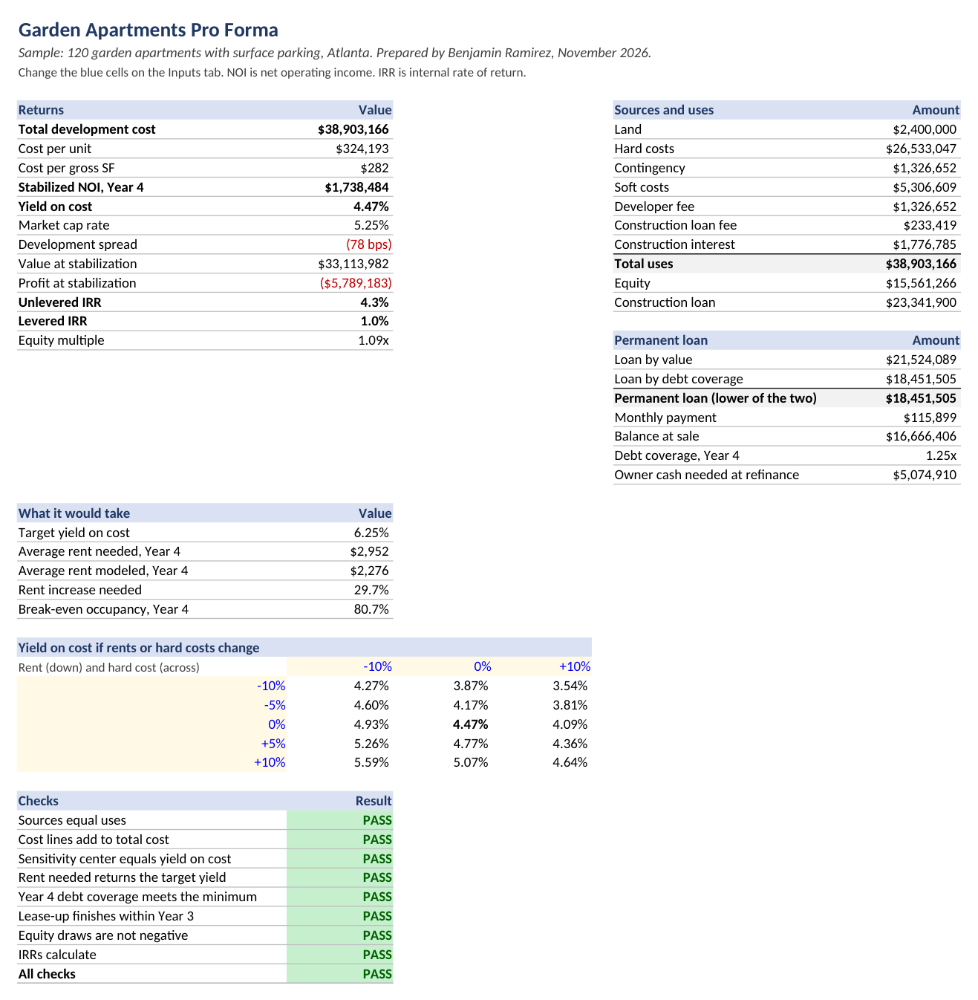

Work samples in underwriting, financial modeling and site analysis. Each model labels its assumptions and includes checks, so the numbers can be traced and tested.
Model Review and Audit: 24 Unit Apartment Acquisition
UnderwritingModel auditExcelI reviewed a sample acquisition model for a 24 unit apartment building in Atlanta. As received, it showed a 19.3% levered IRR (internal rate of return). I found and fixed six errors in rent growth, vacancy, the management fee, property tax, equity and selling costs. Each fix is logged by cell with its effect on the IRR, and the review flags Year 1 debt coverage of 1.01x as a likely constraint on loan size.
| Result | As received | Corrected |
|---|---|---|
| Levered IRR | 19.3% | (2.3%) |
| Equity multiple | 2.32x | 0.89x |
| Year 1 NOI (net operating income) | $229,744 | $192,801 |
| Year 1 debt coverage | 1.20x | 1.01x |

Atlanta Garden Apartments Pro Forma
Development pro formaMultifamilyExcelA sample development pro forma for 120 garden apartments with surface parking in Atlanta, built in Years 1 and 2, leased up in Year 3 and sold at the end of Year 10. Total development cost is $38.9 million and Year 4 NOI is $1.74 million, for a 4.47% yield on cost. To reach a 6.25% target, average monthly rent in Year 4 would need to rise from $2,276 to $2,952.

Jobs and Housing Site Selection Map
GISQGISSite selectionAn interactive map of jobs versus housing across 3,150 hexagons in Savannah, GA and St. Petersburg, FL, using Census LODES (LEHD Origin Destination Employment Statistics) job data. It finds clusters with Local Moran's I and scores 100 candidate sites.
Tempe Traffic Crash Dashboard
R ShinyData visualizationAn interactive crash map and dashboard for Tempe, AZ, built in R Shiny.